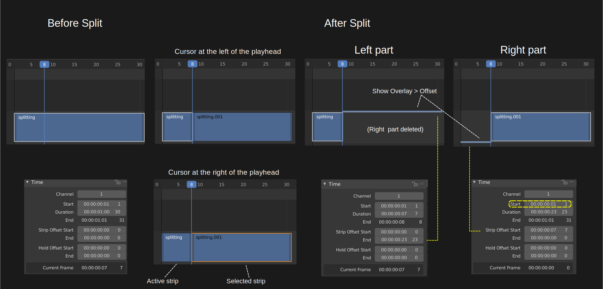
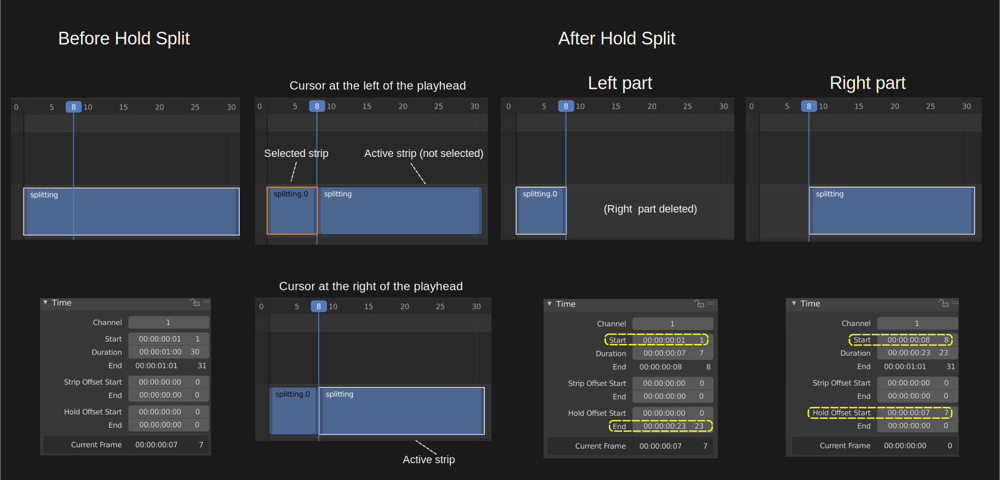
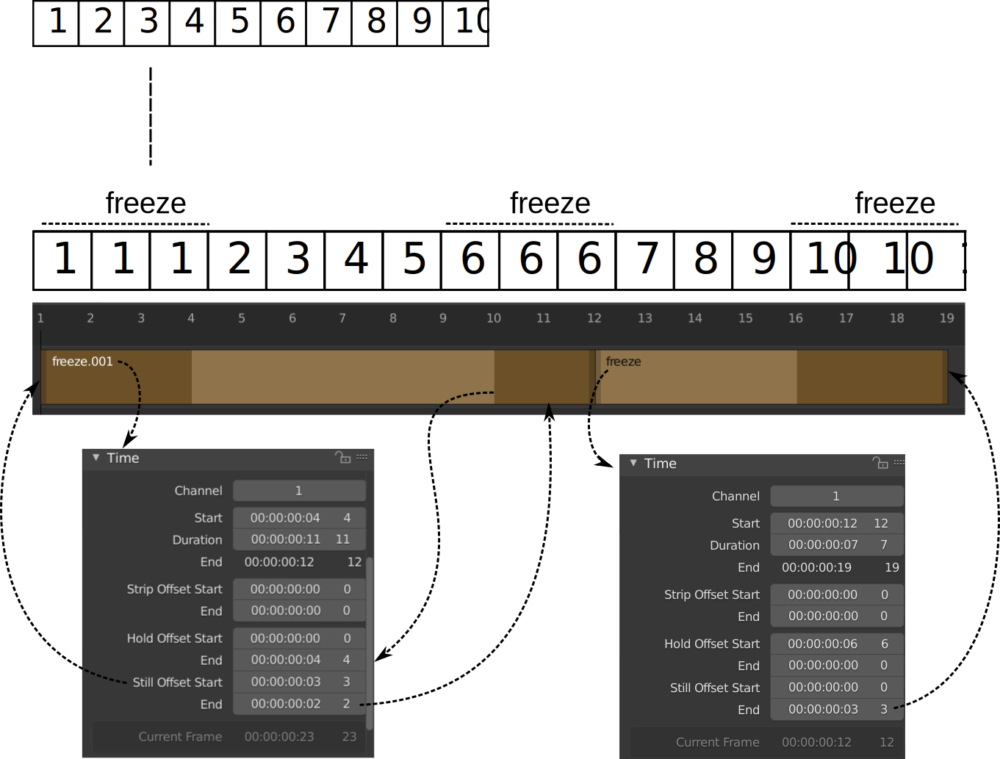
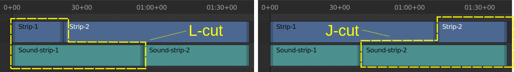

2.2.1.6. Transform¶
Transform セクションでは、Split、Trim、Group という 3 つの操作について説明します。
2.2.1.6.1. Split¶
ストリップの分割とは、ストリップをPlayheadの位置で 2 つの部分に分割することです。両方のパートは引き続き独立したストリップ（同じソースを共有する）として機能します。分割はすべてのストリップ タイプで実行できます。ただし、エフェクト ストリップを分割すると、エフェクトの入力ストリップも分割され、その逆も同様です。
Blender の以前のバージョンや文献の大部分では、この操作は "Cutting" と呼ばれていました。 ただし、コンピュータ環境では、この用語は主にコピー、カット、ペーストの意味で使用され、削除を意味します。 したがって、 Split という用語が好まれますが、 Jump Cut、 J-Cut 、 L-Cut などの用語でも非常に目立つままです。
このコマンドには、Split と Hold Split の 2 つのバリエーションがあります。
- Split K
[Strip] メニュー > [Split] またはショートカット K キーを使用して、選択したストリップを現在のフレームで 2 つに分割できます。これにより、同じソースを使用する 2 つのストリップが作成され、元のストリップのタイミングと長さに適合します。
警告
ショートカット K を使用している場合は、マウス カーソルが Playhead のどちら側にあるかが重要になります (図 1)。 カーソルが Playhead の左側にある場合、左側のストリップがアクティブなストリップ (白い輪郭とテキスト オーバーレイ) になるため、これも選択されます。 マウス カーソルが Playhead の右側にある場合、右側のストリップは選択されたストリップ (オレンジ色の輪郭) ですが、アクティブなストリップではありません (白いテキスト オーバーレイはありません)。予想に反して、Time フィールドは左側のストリップに関連付けられます。（選択された）右側のストリップではありません。
図 1: Split コマンドの前後のストリップ プロパティ¶
図 1 では、Split コマンドが発行された直後の結果が 2 列目に示されていることに注意してください。3 番目の列では、分割の右側の部分が削除されます。4 番目の列では、左側の部分が削除され、右側のストリップがアクティブになります。
また、左右のストリップの開始フレームが同じであることにも注意してください: フレーム 1; 右ストリップは視覚的にはフレーム 8 から始まりますが、これは Strip Offset Start フィールドで実現されます。同様に、左側のストリップの途中での終了は、Strip Offset End フィールドで行われます。
分割のどちらかの部分から、元のストリップ全体を復元できます。Strip Offset フィールドをゼロにリセットするだけで十分です。これは、左ハンドルまたは右ハンドルをドラッグしても実行できます。
- Hold Split Shift-K
[Strip] メニュー > [Hold Split] またはショートカット Shift-K キーを使用して、選択したストリップを現在のフレームで 2 つに分割できます。ただし、ハンドルをドラッグして、結果として得られる各ストリップの分割を超えたフレームを表示することはできません。
図2 Hold Split コマンドの前後のストリップ プロパティ¶
図 1 と図 2 の間には微妙な違いがあります。結果として得られるストリップはほぼ鏡像になっています。また、最初の左側の部分の名前が変更されていることに注意してください。Strip コマンドの場合、Split 操作の最も重要な部分は最初 (左側) の部分のようです。Hold Split コマンドの場合、これは 2 番目の部分です。
2 番目 (右) パーツの開始フレームと最初 (左) パーツの終了フレームは、ホールド オフセット開始値とホールド オフセット終了値を使用して再計算されます。Holdという名前は、開始フレームと終了フレームが固定されていることを示します。ストリップはそこで開始または終了し、ハンドルをドラッグしても新しいフレームは表示されません。
Split コマンドと同様に、Hold Split のどちらかの部分から、元のストリップ全体を復元できます。Hold Offset フィールドをゼロにリセットするだけで十分です。これは、左右のハンドルをドラッグしても実行できません。ドラッグの結果、最初または最後のフレームが複製され、フリーズ フレーム効果が引き起こされます (詳細については、 (see Time panel of Movie strip を参照してください)。
Freeze frames
次のストリップ (図 3 を参照) があり、freeze frames エフェクトを導入するとします。
図3 フリーズ フレームの例¶
ストリップの最初と最後でのフリーズは簡単です。ハンドルをドラッグするだけで静止オフセットを導入できます (詳細については、 Time Panel > Still Offset を参照してください。図 3 の左側のパネルには 3 フレームの still Offset Start フィールドがあり、右側のパネルの Still Offset End フィールドもあります) 1 。
ストリップの中央のフリーズはさらに複雑です。まず、元のストリップのフレーム 6 (Playheadは 7) でホールド スプリットが必要です。そうすれば、フレーム 6 にホールド フラグが存在するため、右ハンドルをドラッグするとフレーム 6 が複製されます。このホールド フラグは、freeze.001 などの分割の左側の部分に必要です。元のストリップの長さが 10 フレームだったので、これは Hold Offset End 値 4 です。
図 3 のストリップは画像シーケンスであるため、茶色になっています。小さな Python コードを使用して、[Still Offset fields] フィールドを [Time] パネルに追加できます ( useful scripts を参照) 1 。
Classic Cuts
- Jump Cut
ジャンプ カットは、映画編集におけるカットであり、被写体の 1 つの連続した連続ショットが 2 つの部分に分割され、時間内で前方向にジャンプする効果を表現するために映像の一部が削除されます。… ジャンプカットは、映画の構成的な性質に注意を向けさせる傾向があります。( Wikipedia より) 本質的に、ジャンプ カットを使用すると、編集者は時間を前に進めることができます。
また、会話やインタビューで、話者 1 の視点から話者 2 の視点にジャンプするために使用することもできます。
- L-cut and J-cut
L カットでは、別のショットを見ている場合でも、前のショットの音声が聞こえます。L カットの名前は、編集結果の形状に由来しています (図 4 を参照)。
J カットは本質的に L カットの逆です。ここでは、ビデオを見る前に音声が聞こえます。したがって、聴衆はストリップ 1 を見ていますが、ストリップ 2 からの音声が聞こえてきます (図 4 を参照)。
図4 L カットと J カットの例¶
- Action cut
アクション カットは、アクションの途中で最初のショットのアクションと一致する別のショットにカットするときに作成されます。
2.2.1.6.2. Trim¶
トリミングとは、インポイントとアウトポイントを変更してストリップの長さを変更することです。図5 では、チャネル 2 の元のストリップはフレーム 1 で始まり、継続時間は 11138 フレームです。チャンネル 3 に複製され、トリミングされます。新しいイン ポイントはフレーム 2226 (1 + ストリップ オフセット開始) にあり、新しいアウト ポイントはフレーム 7665 (継続時間 - ストリップ オフセット終了) にあります。 Time panel または Split operation のセクションですでに説明したように、TrimとSplitは「Strip Offset」フィールドを使用して行われます。
図5 ムービー ストリップのトリミング¶
ストリップのトリミングは主にマウスで行われます。ただし、キーボードで値を入力するか、プロパティのスライダーを使用して、[Strip Offset]フィールドを直接変更することもできます。値は負の値になる場合があります。これにより、最初および/または最後のフレームが複製 (フリーズ) されます。
LMB Click によるハンドルのドラッグ
ストリップの [Strip Offset Start]プロパティは、ストリップの左側のハンドルを LMB Click で選択できます。 図 5 では、このハンドルの色は、選択されアクティブなストリップについては白色、選択されているが非アクティブなストリップについてはオレンジ色となっています。LMB を押したままマウスを左右に動かすと、選択したストリップの IN ポイントが移動したフレーム数だけ変更されます。ストリップ バーの高さが十分な場合にのみ、ストリップの左下隅にあるフレーム番号ラベルには、新しい IN ポイントのフレーム番号が表示されます (図 5 を参照)。
20 個の画像シーケンス ストリップがある場合、左ハンドルを右に 10 フレーム分ドラッグすると、ストリップは画像 11 から始まります (画像 1 ～ 10 はスキップされます)。これを使用して、ロールアップまたは不要なリードインを切り取ります。左にドラッグすると、ドラッグした数のフレームの最初のフレームのリードイン (コピー) が作成されます。クリップの開始時にトランジション用にいくつかのフレームが必要な場合にこれを使用します。
ストリップの[Strip Offset End]は、 ストリップの右側のハンドルを LMB-Click で選択できます。それを押したまま（または G グラブを押して）マウスを動かすと、ストリップ内の OUT ポイントが変更されます。ストリップの右下隅にあるフレーム番号ラベルには、OUT ポイントのフレーム番号が表示されます。
右ハンドルを左方向にドラッグするとクリップが短くなります。末尾にある元のイメージは無視されます。これを使用すると、ロールダウンを素早く切り取ることができます。右ハンドルを右にドラッグすると、クリップが延長されます。ムービーや画像シーケンスの場合、使い果たされるまでさらに多くのアニメーションが使用されます。クリップを終端を超えて延長すると、Blender は最後の画像のコピーを作成します。このクリップからのトランジションにこれを使用します。
Shift LMB を使用して、異なるストリップの複数の左ハンドルまたは右ハンドルを選択できます。 選択されたハンドルは色付けされます。アクティブなストリップは白、非アクティブなストリップはオレンジになります。 選択したハンドル上で LMB Click & drag すると、選択したすべてのハンドルがマウスの移動と同じ方向に、マウスが移動したフレーム数だけ移動します。
注釈
LMB によるハンドルの選択は、 特別なボックス選択 ( Ctrl B )、または [Select]メニュー > [Handle] を使用して行うことができます。詳細については、 Selecting のセクションを参照してください。
- LMB Click による handles 選択 と G (Grab)
LMB Click`でハンドルを選択してドラッグする代わりに、すべてのハンドルを選択して :kbd:`G を押すこともできます。 これにより、同じトリミングが行われます。利点は、ストリップ領域をクリックしてドラッグする必要がないことです。G を押して、マウスを動かすだけで十分です(マウスの位置はどこでも)。
- LMB Click による handles 選択 と E (Extend)
E キーまたは [Strip]メニュー > [Transform] > [Move/Extend from Current Frame] キーを使用してハンドルを選択しなくても、選択したストリップを移動または延長/短縮 (つまりトリミング) できます。ただし、ここでは現在のフレーム (Playhead) の位置とマウスの初期位置が重要です。
Playhead が選択したストリップの範囲外にある場合、 E は選択したすべてのストリップがマウスの移動方向に移動します。これは、G キーによるストリップ全体の移動動作を模倣します。
Playhead 選択した（一部の）ストリップの範囲内にある場合、E キーは選択したストリップをトリミングします。マウスがPlayheadの左側にある場合、選択したストリップの IN ポイントはマウスの方向に従います (左側のストリップ ハンドルでトリミングするかのように)。マウスがPlayheadの右側にある場合、OUT ポイントはマウスの方向に従います (右のストリップ ハンドルでトリミングするかのように)。
要約すると、現在のフレーム インジケーター (Playhead) の「マウス側」から選択されたすべてのストリップ ハンドルが一緒に変形し、選択されたストリップを移動または延長/短縮します。
- Clear strip offsets: ALT O
選択したストリップのすべてのトリミングは、 Alt O または [Strip]メニュー > [Transform] > [Clear Strip Offset] を使用してクリアできます。選択したストリップの[Strip Offset Start]フィールドと[Strip Offset End]フィールドがゼロにリセットされます。
- 精密なトリミング
Sequencer タイムラインのムービー ストリップにはサムネイルを表示できますが ([Show Overlay] > [Thumbnails])、これらのサムネイルでは正確な視覚的フィードバックを伴うトリミングはできません。
ただし、デフォルトでは、Preview ウィンドウには現在のフレーム (Preview の位置にあるフレーム) のみが表示されます。Preview ウィンドウのメニューの [View] > [Preview during Transform] を使用すると、精密トリミングを有効にすることができます。Preview ウィンドウには、アクティブなストリップの選択したハンドルの位置にフレームが一時的に表示されます (図6 を参照)。
図6: 変換中のプレビューを有効にしてトリミング (Tin2Tin の例)¶
- Esc
トリミング中に Esc を押すと、ストリップ ハンドルが元の位置にリセットされ、トリム操作がキャンセルされます。
2.2.1.6.3. Group¶
選択したストリップは、 Ctrl-G を使用して 1 つのいわゆるメタ ストリップに簡単にグループ化できます。 メタ ストリップは、複数のストリップを含めることができるストリップですが、1 つのストリップであるかのように扱われます。 Sequencer で使用可能なチャンネルの最大数により、グループ化できるストリップの最大数は 128 です。メタ ストリップの長さは、ストリップの最も早い開始時間から最も遅い終了時間までとなります。
図1 メタ ストリップの例¶
Meta ストリップは、グループ化されたストリップのチャネルが Meta ストリップ内の小さな水平バーで表されるため、非常に特殊な外観を持っています。 図 1 では、グループ化されたストリップが 4 つのチャネルを占有するため、メタ ストリップには 4 本の (小さな) 水平バーが含まれています。 グループ化されたストリップ自体は、メタ ストリップ内で独自の色で表されます。 たとえば、上部の 2 つの紫色の領域は、チャンネル 6 のテキスト ストリップからのものです。メタ ストリップ自体の色は青みがかった紫で、グループ化されたストリップが利用できない領域をカバーしています。グループ化するストリップが 1 つだけの場合、メタ ストリップの色はグループ化されたストリップと非常に似ており (ほとんどの場合、少し暗い)、メタ ストリップ自体を認識するのは困難です。
メタ ストリップは、Sequencer タイムラインで選択したストリップを置き換え、アクティブなストリップのチャンネルに配置されます。 これにより、グループをボックス選択するときに、多少予期しない位置が発生する可能性があります (アクティブなストリップはボックス選択によって変更されません)。
注釈
図 1 は、メタ ストリップとグループ化されたストリップがタイムラインで同時に表示されることはないため、少し誤解を招きます。メタ ストリップは、グループ化されたストリップを置き換えます。
図 1 は、メタ ストリップを作成し、それを複製し、その複製をメタ化解除することによって作成されます。
実際、メタ ストリップは、位置 X と Y、スケール、回転などの独自の (独立した) プロパティを備えた完全に新しいストリップです。 これは、グループ化されたストリップがレンダリングされ、そのレンダリング結果が新しい (メタ) ストリップとしてタイムラインにインポートされるようなものです。 たとえば、メタ ストリップの作成後にグループ化されたストリップの長さを増やしても、メタ ストリップの長さは長くなりません。ストリップ ハンドルをドラッグして手動で行う必要があります。
メタ ストリップはネストできます。たとえば、1 つのメタ ストリップをコピーして、別のメタ ストリップに貼り付けることができます。
- Make Meta Strip Ctrl-G
メタ ストリップを作成するには、グループ化するすべてのストリップを選択し、 Ctrl-G を押してグループ化します。メタ ストリップは、最初のストリップの始まりから最後のストリップの終わりまで続き、すべてのチャンネルが 1 つのストリップに凝縮されます。メタ ストリップは、アクティブ ストリップのチャネルに配置されます。
- UnMeta Strip Ctrl-Alt-G
メタ ストリップを分離 (グループ解除) すると、ストリップが相対的な位置とチャンネルに復元されます。これは、メタ ストリップを削除することを選択し、内部のストリップを保持したい場合に使用できます。
メタ ストリップに追加されたエフェクトは削除されることに注意してください。
- Edit a Meta strip Tab
Tab を押すと、メタ ストリップ内のコンテンツを編集できます。 これにより、ストリップが元のグループに展開され、他のストリップが非表示になります。メタ ストリップを終了するには、Tabもう一度押します。 メタ ストリップはネストすることもできるため、編集が少し混乱します。 メタ ストリップの 1 レベルを終了するには、押したときにメタ ストリップが選択されていないことを確認してくださいTab(何も選択しないか、別の通常のストリップを選択します)。
警告
メタ ストリップにグローなどのエフェクトを追加することは可能ですが、メタ ストリップを解除するとエフェクトは削除されます。
メタ ストリップのデフォルトのブレンド モードは置換です (以下のすべてのストリップは表示されません)。これによりアニメーションの結果が変わる場合が多いため、必ず結果を確認し、必要に応じてブレンド モードを調整してください。
上記のため、既存のメタ ストリップに新しいストリップを追加は、メタストリップは利用せず、 その後新しいストリップを追加してメタ ストリップを再度再作成する必要があります。新しいストリップを (クリップボード上に) コピーし、メタ ストリップ (タブ) に移動し、新しいストリップを貼り付けて、メタ ストリップから出る方が良いでしょう。
メタ ストリップは主に整理ツールですが、他にも多数の使用例があります。
複雑な配置で多数のストリップを使用している場合は、メタ ストリップを使用してそれらをグループ化できます。これにより、シーケンサーで使用される垂直方向のスペースを削減できます。
メタ ストリップを使用すると、128 チャンネルの制限を拡張できます。グループ化されたストリップは 1 つのチャンネルのみを占有します。
メタ ストリップは、オーディオとビデオを同期した状態に保つための便利な方法です。残念ながら、サムネイルの利点が失われます。
より簡単な方法で Speed Effect を追加するために使用できます。手順の詳細なチュートリアルについては、 Blender Frenzy を参照してください。
メタ ストリップの便利な使い方の 1 つは、複数のストリップに同じ効果を適用したい場合です。エフェクトのセットを 1 つのメタ ストリップに適用する方が、個々のストリップに適用するよりもはるかに便利です。調整レイヤーを使用して、上記と同様のタスクを実行することもできます。
訳注